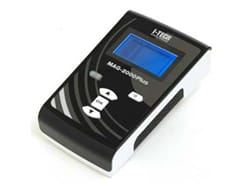
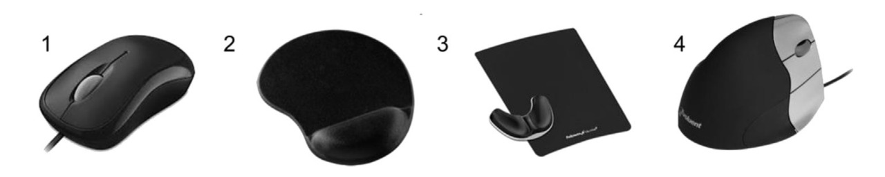

Propuestas de solución
FÉRULA + MAGNETOTERAPIA
El tratamiento con férula del Síndrome del Túnel CarpianoLa magnetoterapia es una técnica utilizada para disminuir el dolor y la inflamación que afecta una terminación nerviosa contribuyen a bajar la presión en el nervio mediano. Aunque la disminución del dolor es mínima, creemos que combinado con la férula podríamos obtener resultados óptimos.
“La magnetoterapia es una técnica de fisioterapia especialmente interesante en los procesos de rehabilitación del Síndrome del túnel carpiano” (Francisco Barrios Marco, nd) y otro método usado para el síndrome del túnel carpiano es la implementación de una férula (muñequera). Así que primero analizaremos las ventajas y desventajas de la magnetoterapia como tratamiento.
Ventajas:
Disminución del dolor gracias a los campos
magnéticos que afectan las terminaciones nerviosas.
La disminución de la inflamación contribuirá a bajar la presión en el
nervio mediano.
Es eficaz contra el tratamiento del estrés. (3).
Se puede hacer el tratamiento en la casa del paciente gracias a un
producto portátil
Desventajas:
La disminución del dolor es mínima casi
funciona como un placebo.
El precio de un aparato portátil es caro, además de que posee una baja
frecuencia, pero una alta intensidad.
Si bien la disminución del dolor es mínima se logró hacer un cuadro que nos muestra el índice del dolor y la media del imán.(4)
Como se mencionó anteriormente la clave para una unión entre una férula y el tratamiento mediante magnetoterapia es que esta puede ser portátil, lo cual nos permite una facilidad del uso de la magnetoterapia en lugares fuera de un hospital ya que se optimiza el tiempo del tratamiento.
CINTA DE KINESIO + EJERCICIOS TERAPÉUTICOS
Las cintas de kinesio reducen significativamente la presión sobre el nervio, facilita el movimiento de los tendones y reduce el dolor a través de la supresión neurológica. La aplicación de KT para el tratamiento de CTS es tan útil como la aplicación de los dispositivos ortopédicos (OD) con respecto al alivio del dolor y superior a los (OD) en la mejora del estado funcional. Lo que más rescatamos de la investigación es que las cintas de Kinesio no interfieren con el trabajo diario en comparación con las férulas. Junto con los ejercicios terapéuticos, creemos que el tiempo de tratamiento sería mucho menor al que suponen ambos por separado.

MOUSE PAD + ELECTROTERAPIA
Esta propuesta de solución consiste en la creación de un mouse pad con electrodos que produzcan impulsos eléctricos, los cuales desinflaman el ligamento causante del síndrome en cuestión.
Las posiciones de muñeca no neutras y la presión externa que conducen a un aumento de la presión del túnel carpiano durante el uso de la computadora se han asociado con un mayor riesgo de síndrome del túnel carpiano (STC). Este estudio investigó si los dispositivos ergonómicos de uso común reducen la presión del túnel carpiano en pacientes con STC. La presión del túnel carpiano se midió en veintiún pacientes con STC antes, durante y después de una tarea de mouse de computadora usando un mouse estándar, un mouse vertical, una almohadilla de mouse de gel y un soporte de palma deslizante. La presión del túnel carpiano aumentó al operar un mouse de computadora. Aunque el mouse vertical redujo significativamente la desviación cubital y la almohadilla de mouse de gel y el soporte deslizante de la palma disminuyeron la extensión de la muñeca, ninguno de los dispositivos ergonómicos redujo la presión del túnel carpiano. Por lo tanto, los resultados de este estudio no respaldan una recomendación fuerte a favor o en contra de ninguno de los dispositivos ergonómicos comúnmente recomendados para pacientes con STC. La selección de dispositivos ergonómicos depende de la preferencia personal.
Fig. 1. Diferentes ratones y dispositivos ergonómicos utilizados: (1) ratón estándar, (2) almohadilla de mouse de gel, (3) soporte deslizante de la palma con un canal Health-V para reducir la presión de contacto sobre la muñeca, (4) ratón vertical.

Fig. 2. (A) Presión media del túnel carpiano durante las cuatro condiciones diferentes (en mm Hg) antes (columna blanca), durante (columna negra) y después (sombreado horizontal) la tarea de apuntar y hacer clic. *: Presión significativamente elevada durante la tarea de hacer clic en comparación con el período de descanso antes y después de la tarea. Las barras de error representan 1 SD, N 1⁄4 21. (B) Presión del túnel carpiano (en mm Hg) de pacientes individuales durante las tareas de "apuntar y hacer clic". Los niveles de presión durante las diferentes condiciones están conectados con líneas de puntos para cada participante.


Fig. 3. Ángulos medios de flexión-extensión (A) y desviación radiocubital (B) en la muñeca antes (columna blanca), durante (columna negra) y después (sombreado horizontal) la tarea de apuntar y hacer clic. *: Aumento significativo de la extensión de la muñeca y la desviación cubital en comparación con el período de descanso antes y después de las tareas. #: Significativamente más extensión de muñeca durante la condición estándar y vertical del mouse en comparación con la almohadilla de mouse de gel y el soporte deslizante de la palma. Las barras de error representan 1 SD; N 1⁄4 21.

Fig. 4. Clasificaciones de confort para los diferentes ratones y dispositivos ergonómicos. Los símbolos representan las clasificaciones de confort para cada condición. Las calificaciones de los participantes individuales están conectadas con líneas punteadas. No se identificaron diferencias significativas entre las condiciones. Los cruces múltiples de las líneas punteadas muestran que diferentes participantes calificaron la comodidad de las cuatro condiciones de manera muy diferente. Tenga en cuenta que los datos se presentan para 20 participantes ya que las calificaciones de comodidad no se obtuvieron del primer participante.
Electroterapia
La fisioterapia es, por tanto, una parte fundamental del tratamiento y una vía ineludible para obtener la recuperación total, especialmente en las primeras fases, antes de dar paso a un programa de rehabilitación específico y con ejercicios de intensidad creciente. En este contexto, la electroestimulación neurológica cumple una importante función dentro de la fisioterapia, fundamentalmente para reducir el dolor y la inflamación mediante la aplicación de corrientes eléctricas. Para ello se utiliza un aparato al que se conoce como TENS (estimulación eléctrica transcutánea del sistema nervioso) que genera una serie de impulsos eléctricos que se transmiten hasta unos parches (2 ó 4) con la superficie cubierta de un gel especial, que se adhieren sobre la piel sobre el músculo, el ligamento o tendón lesionado.El aparato dispone de varios programas que determinan la frecuencia y la intensidad con que se aplican los impulsos eléctricos, que producen un efecto analgésico, calentando el músculo y reduciendo o eliminando el dolor. Algunos estudios indican que la aplicación del TENS genera la liberación de opioides endógenos, lo que induce la analgesia. Se aplica entre 10 y 15 minutos en cada sesión de fisioterapia. En el mismo aparato suele haber otra opción de electroestimulación, a la que se denomina EMS (electroestimulación muscular) cuyo objetivo es el de movilizar los músculos, ligamentos y tendones como si estuviesen haciendo ejercicios de forma intensiva. Con ello, se trata de fortalecer todos ellos y acelerar el restablecimiento de la movilidad y la recuperación del tono muscular. Al eliminar o reducir el dolor con la aplicación del TENS se elimina una barrera esencial para mover la articulación con una mayor extensión, lo que permitirá fortalecer. El EMS, por su parte, refuerza el tono muscular y por tanto la estabilidad de la rodilla, y ello contribuye también a reducir gradualmente la presencia del dolor. Actualmente, la electroestimulación forma parte de la rutina de las sesiones de fisioterapia para la rehabilitación tras lesiones de rodilla, con o sin cirugía, y ha permitido acortar los tiempos de recuperación de forma sustancial.(2)